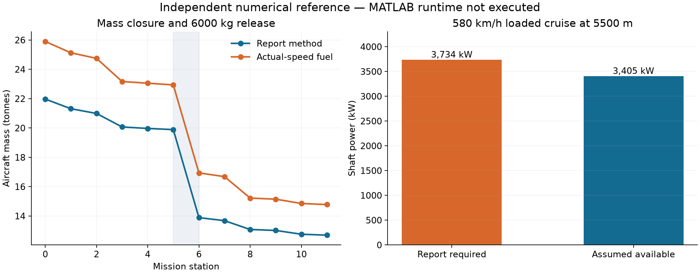

AIRCRAFT DESIGN I · PROJECT 1 · MATLAB PACKAGE
Firefighter Aircraft Design Studio
6,000 kg water payload · 700 km mission radius · 2036 design year. This page presents independent numerical checks of the supplied report and the new MATLAB equations.
Report method MTOW21.97 tonnes
Actual-speed fuel MTOW25.90 tonnes
Loaded cruise L/D11.10
Baseline comparison
| Quantity | Unit | Report method | Actual-speed fuel |
|---|
| Take-off mass | kg | 21,965.28 | 25,896.97 |
| Empty mass | kg | 12,289.65 | 14,265.26 |
| Fuel | kg | 3,475.63 | 5,431.72 |
| Wing area | m² | 61.57 | 72.59 |
| Span | m | 26.61 | 28.89 |
| Installed power | kW | 5,052.02 | 5,956.30 |
The report prints 21,967 kg take-off mass. Recomputing with its rounded A/C and exact segment formulas gives 21,965 kg. The actual-speed fuel method uses changing mass and drag at the commanded speeds.

Design finding: At 580 km/h and 5500 m, report-baseline loaded cruise requires about 3,734 kW; the added density-based engine lapse assumption gives 3,405 kW available. The actual-speed mass estimate assumes this speed can be sustained. It is not a confirmed feasible design.
Open in MATLAB
Select the new FirefighterDesignStudio_v2 folder as MATLAB's Current Folder, then run LAUNCH_STUDIO. Use analyze_firefighter for exported calculations and check_firefighter_studio(true, true) for numerical, Simulink and GUI smoke checks.
The app covers database/trends, mission and mass sizing, polar, power/climb/stall, constraints, geometry, CG, water parcels, sensitivity and a source-built 6DOF Aerospace Blockset model.
Verification boundary
Standalone MATLAB Code Analyzer checks and independent numerical checks passed. MATLAB startup returned MathWorks error 5201, so the GUI and Simulink model remain unrun. No precompiled SLX is included; the builder creates it inside a working MATLAB session.
Read the guide, verification details, and input assumptions. Full numerical values: JSON reference.